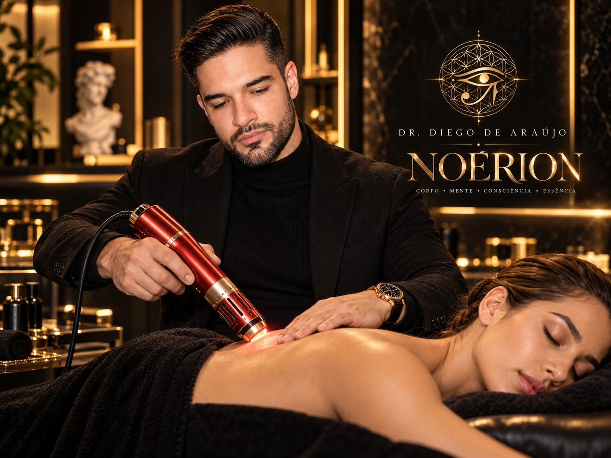
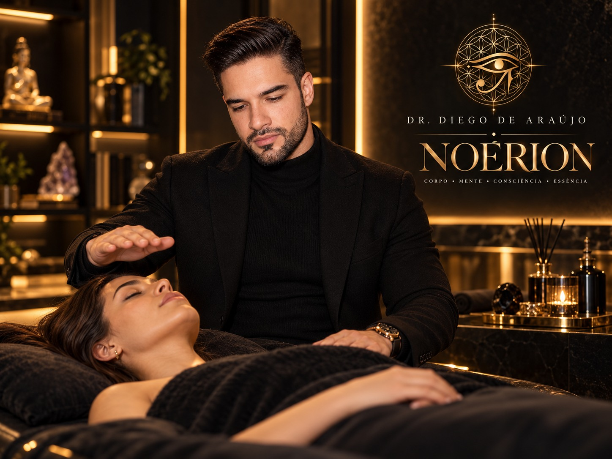
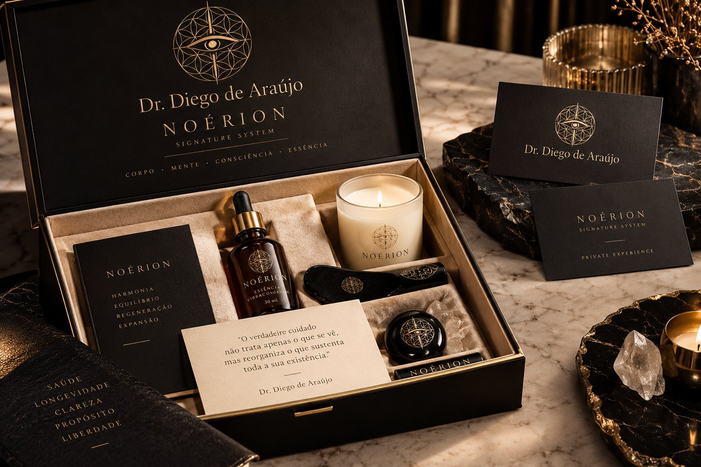
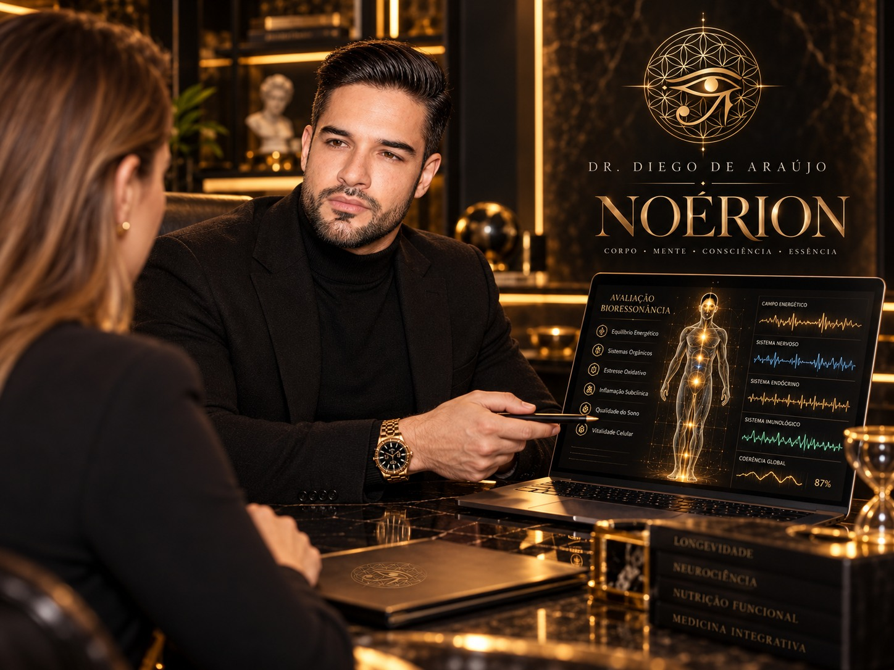

I. ORIGINAntes do método,
Antes do método,
a sua história.
Escuta, trajetória e objetivos pessoais dão forma ao seu Portfólio Privado de Origem. Um ponto de partida construído com você.
CENA EDITORIAL ILUSTRATIVANOÉRION · SIGNATURE SYSTEM
Corpo, mente e consciência em uma experiência reservada, criada e conduzida pessoalmente pelo Dr. Diego de Araújo.
Singular por natureza. Pessoal em cada detalhe.
Há pessoas habituadas a decidir, liderar e construir. Raramente, porém, reservam para si a mesma atenção dedicada às suas conquistas.
O NOÉRION nasce do encontro entre profundidade e presença. Reúne repertório corporal, Processamento Mental, filosofia e práticas conscienciais em um percurso singular, desenhado em torno da sua história.
A experiência começa pela escuta e evolui com escolhas individuais, encontros presenciais e uma atenção que continua entre eles. Na privacidade da sua residência ou em um espaço escolhido em conjunto.
Conheça o Signature SystemConhecimentos que se encontram para acolher as diferentes dimensões de quem você é.
Escuta, trajetória e objetivos pessoais dão forma ao seu Portfólio Privado de Origem. Um ponto de partida construído com você.
CENA EDITORIAL ILUSTRATIVA
Atenção corporal, funcionalidade e repertório fisioterapêutico. Intervenções quando pertinentes, dentro da habilitação profissional e da avaliação individual.
DEMONSTRAÇÃO ILUSTRATIVA · NÃO IMPLICA EFICÁCIA CLÍNICA DO APARELHOProcessamento Mental, padrões vivenciais e reflexões individuais. Uma abordagem autoral voltada à compreensão da própria trajetória.
CENA EDITORIAL ILUSTRATIVA
TAA, desdobramento consciencial e leituras simbólicas. Recursos de natureza espiritual e subjetiva, sempre opcionais e respeitando as suas escolhas.
CENA EDITORIAL ILUSTRATIVA
Cartas de Integração, biblioteca sonora e conteúdos individuais. Acompanhamento pessoal com agenda protegida e contato em horários combinados.
KIT CONCEITUAL · MOCKUP ILUSTRATIVOAs dimensões se conectam de acordo com a sua história. Cada recurso é escolhido individualmente.
Práticas que ampliam o espaço de escuta, percepção e reflexão. Conheça a natureza de cada experiência.
Desenvolvido pelo Dr. Diego de Araújo, é uma abordagem autoral para investigar padrões pessoais, memórias marcantes e experiências percebidas como repetitivas ou limitantes.
Com linguagem própria, propõe a compreensão de fragmentos vivenciais, elaboração reflexiva e novas perspectivas sobre a trajetória individual.
Não se apresenta como hipnose ou psicanálise. Não substitui psicoterapia indicada nem promete tratamento comprovado de traumas.
Uma prática autoral de natureza energética e contemplativa que, na filosofia do Dr. Diego, trabalha a percepção dos centros sutis, chakras e estados de alinhamento pessoal.
Opcional e de caráter subjetivo, para quem deseja explorar essa dimensão da consciência. Não substitui cuidados de saúde.
Investigação espiritual e simbólica de experiências pessoais, relações, narrativas familiares e questões da trajetória individual, conduzida a partir de referências metafísicas.
Experiência opcional e subjetiva. Não comprova acesso factual a acontecimentos ocultos.
Leituras cabalísticas e numerológicas como convites à reflexão. Referências simbólicas para explorar questões pessoais, sem caráter diagnóstico ou preditivo factual.
Composições individualizadas para contemplação e descanso. Uma biblioteca sonora pensada para acompanhar seus momentos de pausa entre os encontros.
Equipamentos de biorressonância e iTeraCare podem integrar o repertório após avaliação da documentação, finalidade e segurança.
Não são divulgados como exames ou tratamentos comprovados para qualquer doença. A tela abaixo é cenográfica; não constitui laudo ou resultado clínico.

04 / O CRIADOR
Dr. Diego de Araújo
Fisioterapeuta com pós-graduação em Neurologia Funcional, idealizador do CESH e fundador da Hermérium. Criador do NOÉRION, do Processamento Mental e da TAA — Tecnologia de Alta Absorção.
Seu repertório reúne desenvolvimento humano, neurociências, filosofia, cabalá, hermetismo e tradições conscienciais. Conhecimentos que se encontram em uma proposta pessoal de escuta, atenção e acompanhamento.
“O percurso começa quando a sua história encontra espaço para ser escutada.”A ESSÊNCIA DA PROPOSTA NOÉRION
Acompanhamento próximo, escolhas individuais e atenção que continua. Em sua residência ou em um ambiente reservado, definido em conjunto.
Portfólio Privado de Origem, Cartas de Integração, biblioteca sonora e materiais individualizados entre os encontros. Condução pessoal pelo Dr. Diego e contato em horários combinados.
Sujeito à proposta individual, disponibilidade e logística.
Ao ingressar, uma caixa de boas-vindas personalizada marca o início do seu percurso: carta nominal, caderno reservado, acesso à biblioteca sonora e elementos sensoriais cuidadosamente selecionados segundo as suas preferências.
Pessoal, desde o primeiro instante.06 / UM CONVITE PESSOAL
Uma entrevista privada para ouvir suas expectativas, apresentar o sistema e compreender se esta experiência faz sentido para o seu momento.
COM RESERVA. SEM COMPROMISSO DE ADESÃO.07 / ANTES DO PRIMEIRO ENCONTRO
Algumas respostas para conhecer
melhor a experiência.
Não. O NOÉRION é um sistema autoral integrativo. Intervenções fisioterapêuticas são incluídas quando pertinentes e dentro da habilitação profissional. A proposta não substitui diagnóstico ou atendimento de saúde indicado.
Não. O percurso é individual, construído a partir da sua história e dos seus objetivos. Práticas espirituais, metafísicas e simbólicas são opcionais, de caráter subjetivo e incluídas apenas se fizerem sentido para você.
Sim, conforme disponibilidade, planejamento individual e condições de deslocamento. Os encontros podem acontecer na sua residência, hospedagem ou em um ambiente reservado escolhido em conjunto.
O investimento de referência é de R$ 10.000 mensais, em programas de 3, 6 ou 12 meses, com dois encontros presenciais por mês e materiais individualizados. A proposta final considera disponibilidade, duração e logística.
A pré-solicitação reúne sua dimensão de interesse, localidade e preferências de contato. A entrevista privada permite esclarecer a proposta e avaliar a compatibilidade. Solicitar uma entrevista não confirma vaga ou adesão.
O formulário reúne nome, e-mail, telefone, cidade, interesses, duração e horário preferido para uma entrevista privada. Não solicitamos dados clínicos, diagnósticos ou relatos de trauma.
Nesta versão, as respostas são usadas apenas no seu navegador para preparar uma solicitação. Elas não são salvas por esta página em um banco de dados ou no armazenamento local. Você pode baixar uma cópia em texto para o seu dispositivo.
Se houver um canal de contato configurado, o botão de envio abrirá o aplicativo correspondente com a mensagem preenchida. O envio dependerá da sua confirmação nesse aplicativo, e o tratamento posterior dos dados seguirá as condições desse canal e do responsável pelo atendimento.
O interesse em receber novidades é separado e opcional. Desmarcar essa opção não impede preparar sua solicitação. O consentimento poderá ser revogado perante o responsável pelo atendimento quando o contato oficial estiver disponível.
Esta página carrega fontes do Google Fonts. Essa conexão pode transmitir informações técnicas, como seu endereço IP, ao provedor. A página não adiciona ferramentas de publicidade ou análise de visitantes.
O canal oficial para atendimento e para questões de privacidade será informado antes da ativação da coleta direta. Esta versão não recebe formulários automaticamente.
O NOÉRION é um sistema autoral integrativo conduzido pelo Dr. Diego de Araújo. A apresentação tem finalidade informativa; não estabelece diagnóstico nem garante resultados.
Práticas espirituais, metafísicas e simbólicas são opcionais, subjetivas e não substituem diagnóstico, psicoterapia ou atendimento de saúde indicado. Recursos complementares dependem da avaliação de finalidade, documentação e segurança.
Valores, duração, deslocamentos e disponibilidade estão sujeitos à proposta individual. A preparação ou o envio de uma pré-solicitação não confirma vaga, agendamento ou contratação.
As imagens são editoriais e ilustrativas, criadas a partir de fotos do Dr. Diego. Não registram atendimentos reais. O kit é um mockup, e as telas ilustradas não são laudos ou resultados clínicos.